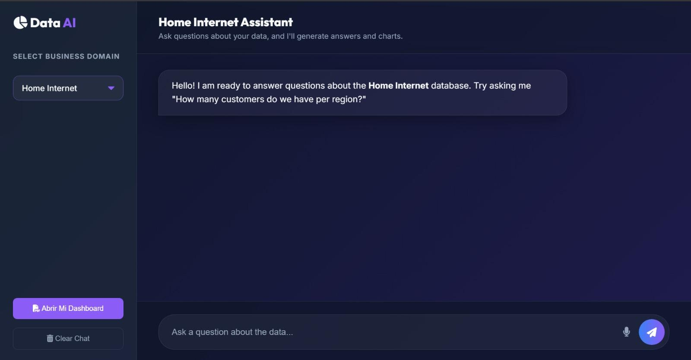

The Challenge
Los clientes corporativos necesitaban democratizar el acceso a los datos alojados en bases de datos relacionales (MySQL, PostgreSQL, GaussDB) para usuarios de negocio que no dominaban el lenguaje SQL.
El desafío técnico principal no era solo la generación de consultas mediante Inteligencia Artificial, sino garantizar la seguridad absoluta de la base de datos frente a alucinaciones del modelo o inyecciones SQL (SQLi) involuntarias que pudieran alterar o destruir datos críticos en producción.


What We Built
Desarrollamos una arquitectura de IA generativa utilizando el modelo Llama 3.1 (8B):
- Prompt Engineering avanzado inyectando el esquema de la base de datos y su diccionario de datos como contexto dinámico
- Principio de menor privilegio (RBAC): la IA operaba bajo credenciales estrictas de solo lectura (SELECT)
- Guardrails de validación y parametrización de consultas antes de su ejecución
- Bloqueo de comandos DML y DDL para prevenir modificaciones accidentales
Results
Se entregó un prototipo funcional en tiempo récord (3 días) con una alta tasa de precisión en la traducción de lenguaje natural a SQL. La arquitectura de seguridad demostró ser robusta, garantizando que ninguna consulta generada por el LLM pudiera ejecutar comandos destructivos.
La solución validó la viabilidad de integrar IA con bases de datos transaccionales sin comprometer la integridad corporativa.
Tools & Technologies
- Llama 3.1 (8B)
- GaussDB (PostgreSQL-compatible)
- RBAC (Role-Based Access Control)
- Zero Trust Architecture
Architecture Decisions
Why Llama 3.1 (8B) instead of GPT-4? Huawei Cloud required an on-premises solution for data sovereignty reasons. Customer data could not leave their infrastructure. Llama 3.1 8B runs on a single GPU (NVIDIA A100) and provides sufficient quality for SQL generation while keeping all data within the customer's control. The 8B parameter size was chosen as the sweet spot between accuracy and inference speed.
Why read-only credentials instead of query validation? Initial testing showed that query validation (parsing SQL to block dangerous commands) had a 3% false positive rate, blocking legitimate queries. Instead, I implemented database-level RBAC where the AI user only has SELECT permissions on specific tables. Even if the AI generates a DROP TABLE command, the database rejects it. This is more secure and has zero false positives.
Why inject schema as context instead of fine-tuning? Fine-tuning Llama 3.1 on SQL generation would require 10,000+ training examples and 20 GPU-hours. Instead, I inject the database schema (table names, column names, data types, relationships) as dynamic context in the prompt. This allows the system to work with any database without retraining. When the schema changes, the prompt updates automatically.
Security Architecture
Zero Trust implementation: Every request goes through 5 validation layers: (1) Authentication via API key with IP whitelist, (2) Schema validation to ensure the query references existing tables, (3) RBAC check to verify the user has access to requested tables, (4) Query parameterization to prevent SQL injection, (5) Result size limit to prevent data exfiltration. If any layer fails, the request is rejected and logged.
Audit logging: Every query (successful or failed) is logged with timestamp, user ID, natural language input, generated SQL, execution time, and result row count. This creates a complete audit trail for compliance and helps identify patterns in failed queries to improve the system.
Cost Analysis
Infrastructure cost: The solution runs on a single NVIDIA A100 GPU instance at $2.50/hour. For a typical workload of 500 queries per day, the GPU runs for 6 hours daily, costing $15/day or $450/month. This includes model inference, embedding generation, and response validation.
Development cost: The POC took 72 hours (3 days) of focused work. This included schema analysis, prompt engineering, security architecture design, and testing. For a production deployment with additional features (caching, multi-tenant support, custom fine-tuning), expect 2-3 weeks of development time.
ROI for the customer: Before the AI assistant, business analysts spent 2 hours per day writing SQL queries to extract data. At $60/hour, that's $120/day or $2,640/month per analyst. With 5 analysts using the system, the monthly savings are $13,200 minus $450 in infrastructure costs, for a net savings of $12,750/month.